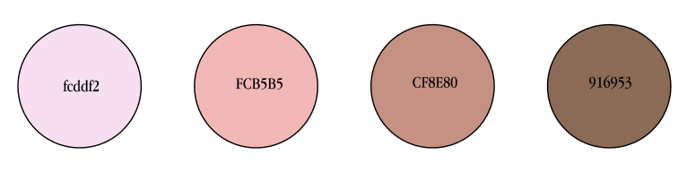
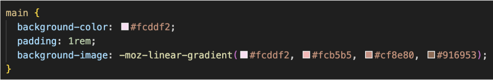
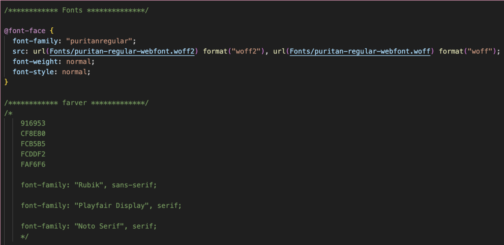

Farvevalg:
Farverne i kodning:
Jeg fandt ud af igennem undervisningen, at der fandtes en kode-funktion, som gjorde at man kunne få sin baggrund til at fade.
Derudover fandt jeg ud af, af man kunne “indhegne” dele af sine elementer i kodningen, og dermed kunne direkerer i flere farvevalg.
Fonte:
Jeg stiftede også bekendskab med at man kunne hente fonte ned fra nettet, både fra google, hvor der findes utallige gratis fonte, men man kunne også hente en font, og lave den om til “woff”.
Studiestartsprøven:
Hele denne læringsproces med kodning og farvevalg, endte ud i vores studiestartsprøve.